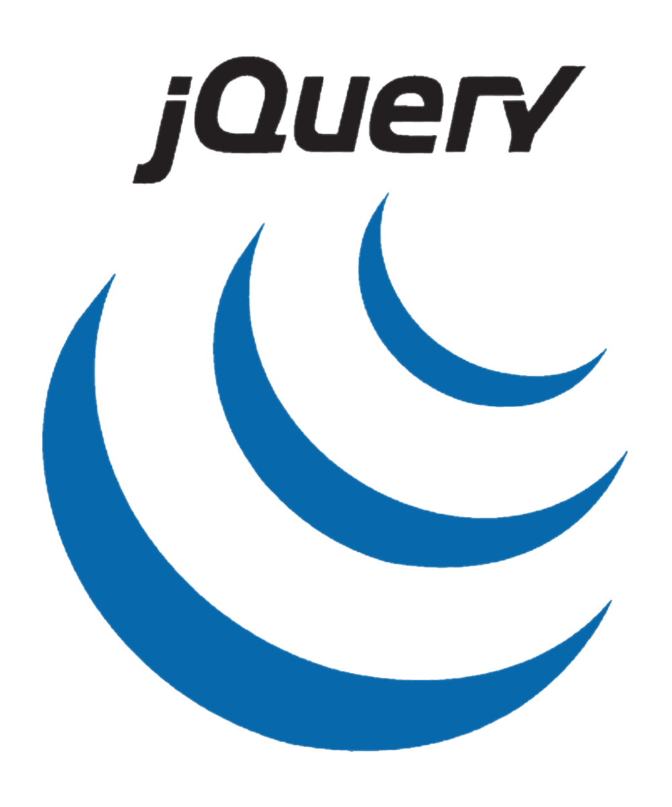

泰山職訓局
- 轉職網頁開發人員
- 掌握就業必備職能
- 由淺入深學習技術
- 強化職場的競爭力

Html
超文本標記語言（英語：HyperText Markup Language，簡稱：HTML）是一種用於建立網頁的標準標記語言。 HTML 是網頁最基礎的技術之一，常與 CSS、JavaScript 一起用來製作網站、網頁應用程式以及行動應用程式的使用者介面。 瀏覽器會讀取 HTML 檔案，並將內容呈現成我們看到的網頁畫面；它主要負責描述網站的結構，而不是用來執行程式邏輯。

CSS3
階層式樣式表（英語：Cascading Style Sheets，縮寫：CSS）是一種用來替 HTML 或 XML 文件加入樣式的語言。 它可以控制字型、顏色、間距、排版和畫面位置，讓原本只有結構的網頁變得更美觀。 CSS3 是現代網頁設計常用的樣式技術，大多數瀏覽器都能支援。
JavaScript
JavaScript（通常縮寫為 JS）是一門高階、直譯式的程式語言，常用於網頁中製作互動效果。 它可以操作文字、陣列、日期和網頁元素，也能透過瀏覽器環境處理使用者的點擊、輸入與畫面變化。 現在大多數網站都會使用 JavaScript，並且受到 Chrome、Firefox、Safari、Opera 等主流瀏覽器支援。

jQuery
jQuery 是一套跨瀏覽器的 JavaScript 函式庫，用來簡化 HTML 與 JavaScript 之間的操作。 它能讓選取 DOM 元素、處理事件、製作動畫效果，以及開發 Ajax 程式變得更容易。 jQuery 也提供建立外掛的能力，讓開發者可以更快速地做出動態網頁與網路應用程式。

Bootstrap
Bootstrap 是一組用於網站和網路應用程式開發的開源前端框架，包含 HTML、CSS 與 JavaScript 的設計工具。 它提供字體排印、表單、按鈕、導覽列，以及許多常見的網頁介面元件。 Bootstrap 的目的，是讓動態網頁和 Web 應用程式的開發更快速，也更容易做出響應式版面。

Sass
Sass（英文全稱：Syntactically Awesome Stylesheets）是一種層疊樣式表語言，最初由 Hampton Catlin 設計，後續由 Natalie Weizenbaum 等人開發。 它可以把 SassScript 轉換成 CSS，讓設計者使用變數、巢狀、混入與繼承等方式撰寫樣式。 Sass 常見的副檔名有 .sass 與 .scss，適合用來管理較大型網站的 CSS。

Vue.js
Vue.js（簡稱 Vue）是一個用於建立使用者介面的開源前端 JavaScript 框架，也能用來製作單頁式應用程式。 Vue.js 由尤雨溪建立，並由他和核心團隊共同維護。 它重視畫面層的組織與簡化，能透過元件和資料更新，讓網頁介面更容易開發與維護。